K-Means clustering analysis of customer income and spending behavior to identify actionable market segments.
The dataset contains 2,200 customer records with five attributes: customer ID (excluded from clustering), gender, age, annual income, and spending score. The goal is to uncover natural customer segments based on behavioral and demographic patterns.
| Feature | Count | Mean | Std | Min | Max |
|---|---|---|---|---|---|
| Age | 2,200 | 38.16 | 12.17 | 18 | 80 |
| Annual Income | 2,200 | 56,143 | 28,410 | 10,000 | 144,100 |
| Spending Score | 2,200 | 46.37 | 25.13 | 1 | 100 |
Univariate and bivariate distributions reveal the structure of the data before any transformation. Age is roughly uniform between 18–70, income follows a right-skewed distribution, and spending score is bimodal around low (~20) and high (~75) spend levels.
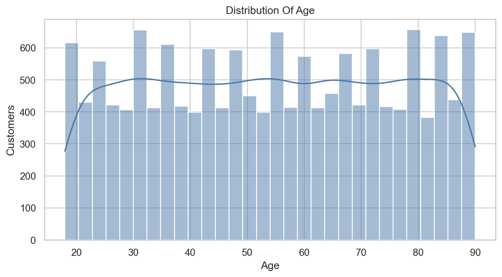
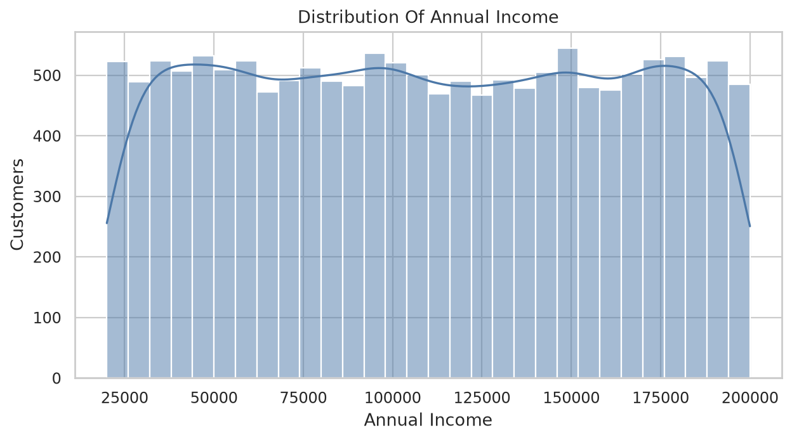
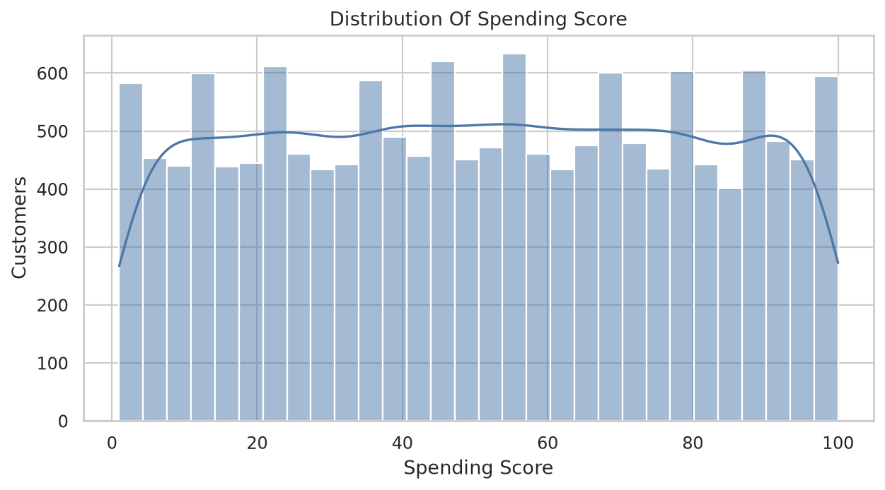
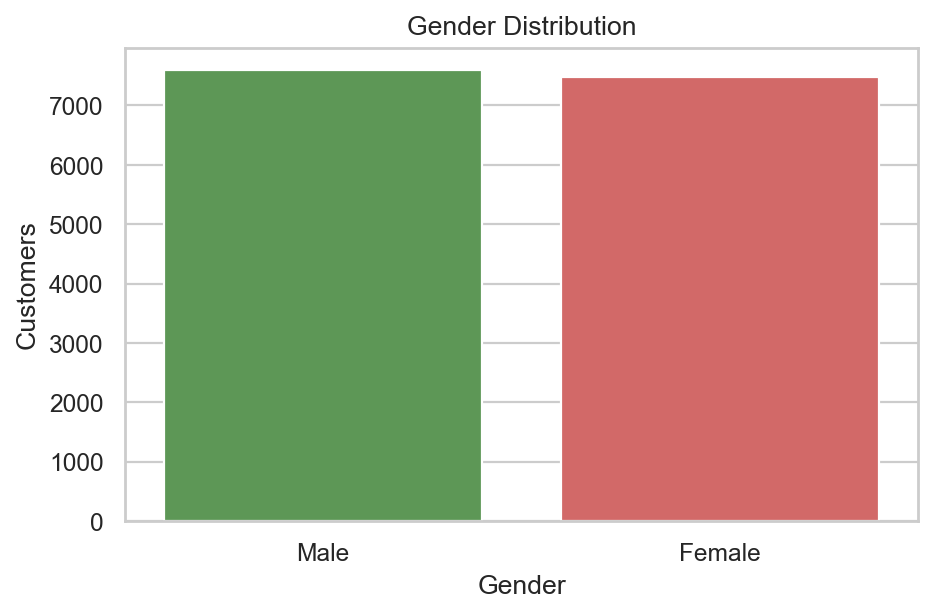
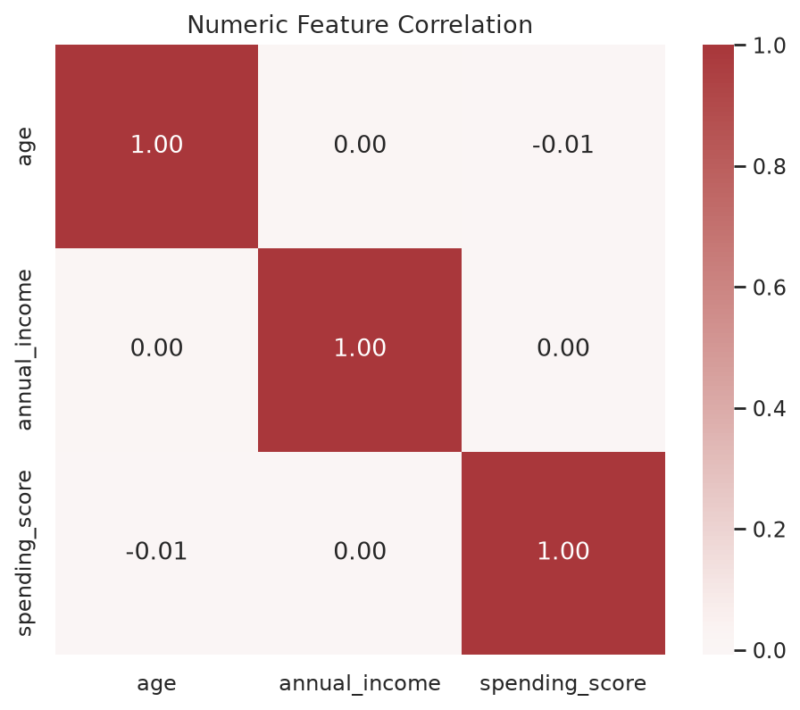
Data quality checks confirm the dataset is clean: no missing values, no outliers detected via IQR or z-score methods, and no duplicate rows. The only categorical feature (gender) was one-hot encoded in an experimental feature set but excluded from the final model in favor of purely behavioral features.
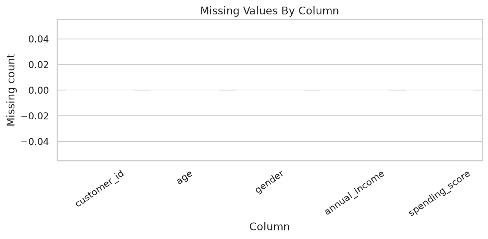
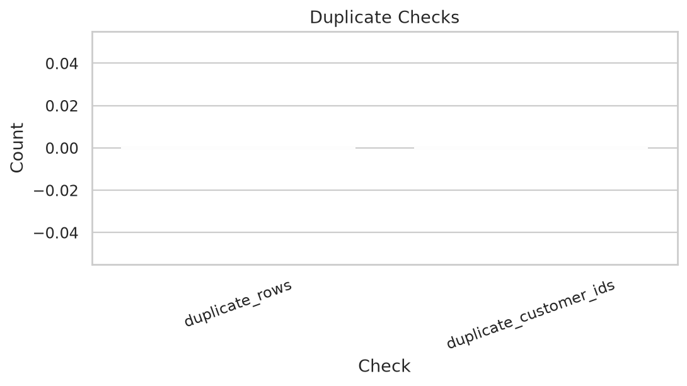
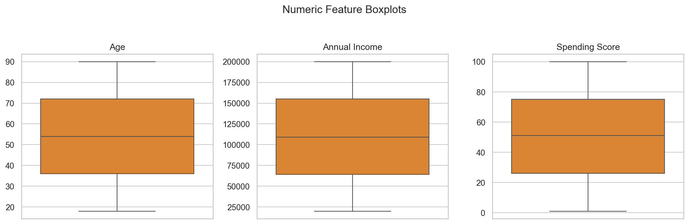
We evaluated K-Means and Gaussian Mixture Models across four feature sets (income_spending_only, age_spending_only, behavior_numeric, behavior_plus_gender) and three scalers (standard, minmax, robust). The best model was selected using a combination of silhouette score and a feature-bonus heuristic favoring interpretability.
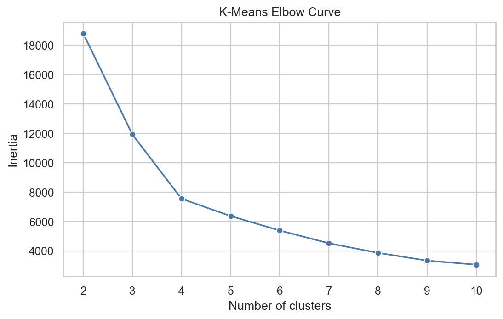
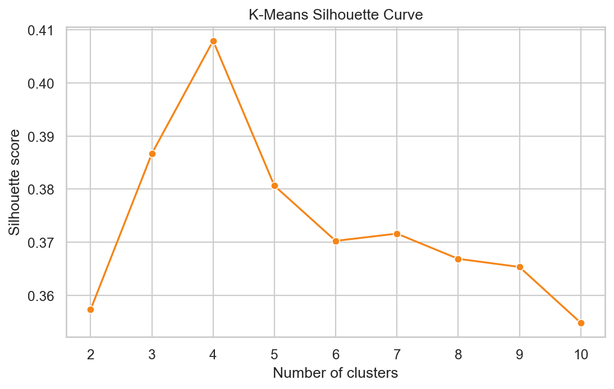
The top model configurations ranked by selection score:
| Rank | Algorithm | Feature Set | Scaler | Clusters | Silhouette | Selected |
|---|---|---|---|---|---|---|
| 1 | K-Means | income_spending_only | robust | 5 | 0.4702 | Yes |
| 2 | K-Means | income_spending_only | standard | 5 | 0.4686 | No |
| 3 | K-Means | income_spending_only | minmax | 5 | 0.4685 | No |
| 4 | GMM | income_spending_only | standard | 5 | 0.4490 | No |
| 5 | K-Means | income_spending_only | robust | 6 | 0.4364 | No |
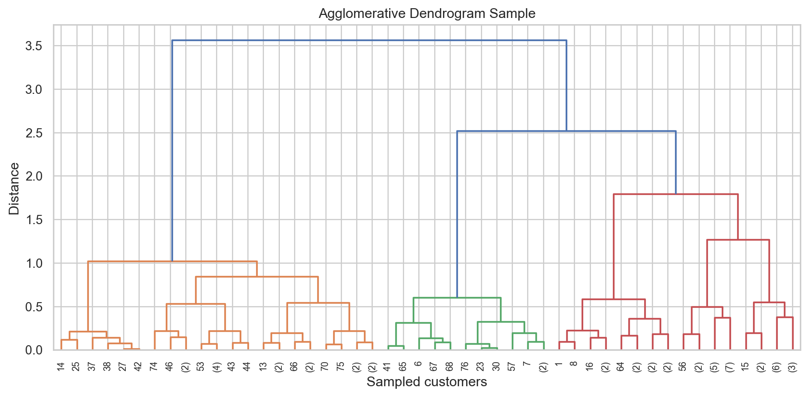
income_spending_only feature set consistently outperforms alternatives. K-Means with n_clusters=5 and RobustScaler achieves the best balance of silhouette score (0.4702) and business interpretability.The final model is K-Means trained on annual income + spending score with RobustScaler and 5 clusters. Below are the cluster visualizations in income/spending space, PCA projection, and cluster centers.
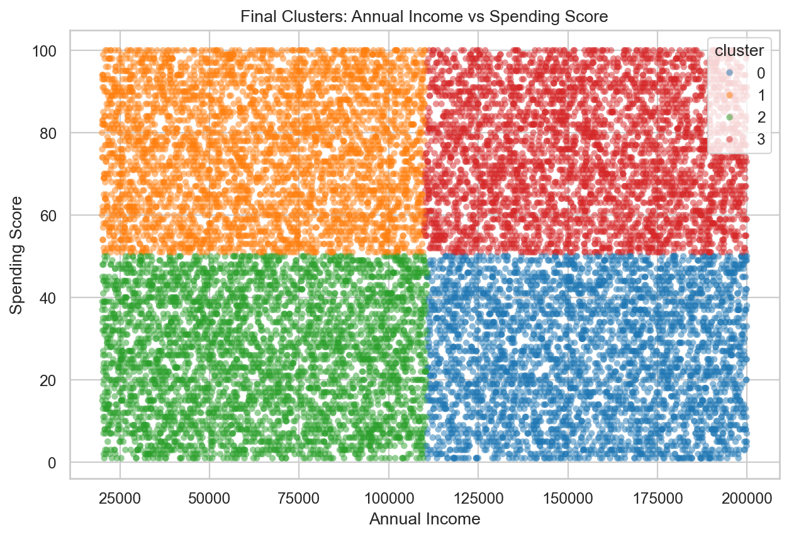
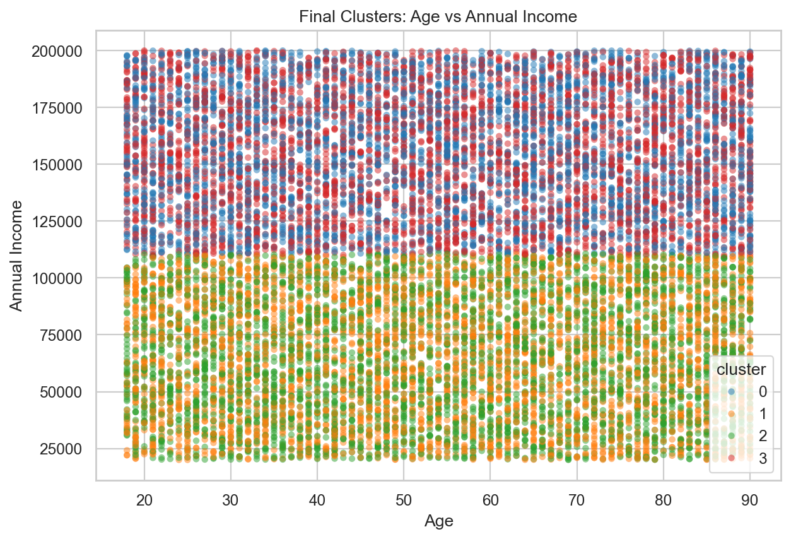
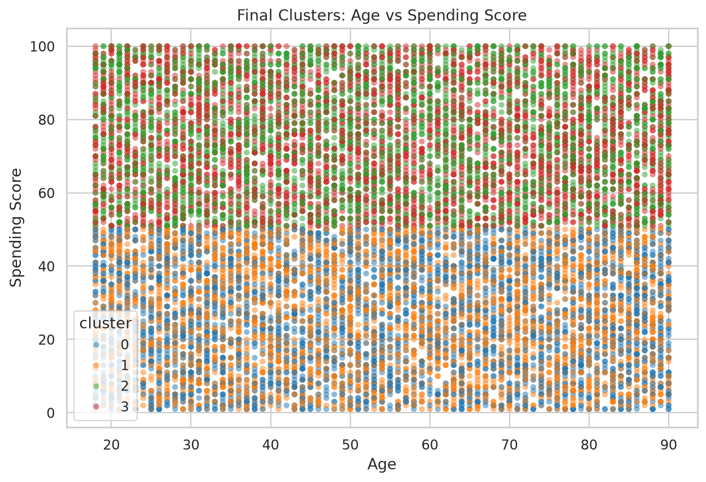
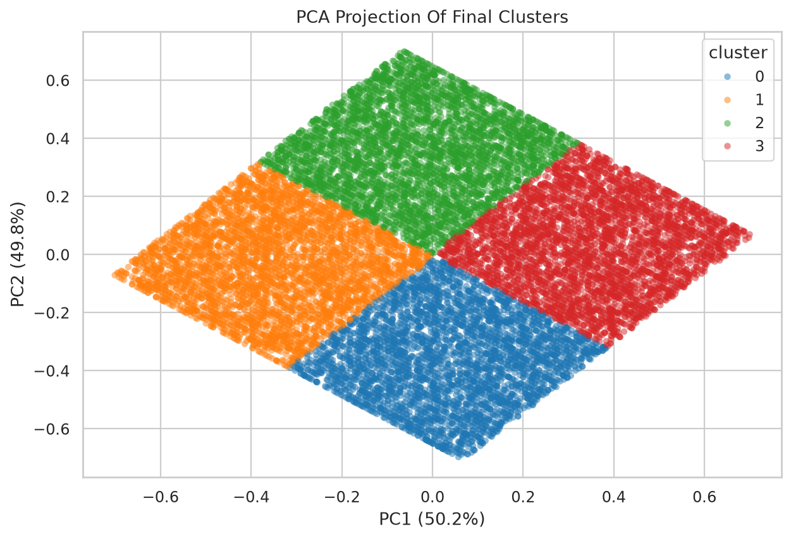
Each cluster is profiled by its demographic averages and assigned a business-friendly segment name. The 5 segments capture distinct customer archetypes with clear behavioral differences.
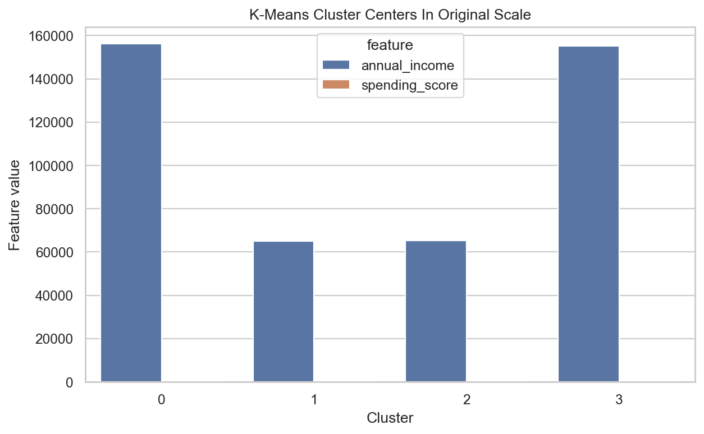
| Cluster | Name | Count | % | Age | Income | Spending | % Female |
|---|---|---|---|---|---|---|---|
| 0 | High income, low spending | 497 | 22.6% | 49.0 | 91,231 | 16.6 | 51.3% |
| 1 | Low income, low spending | 258 | 11.7% | 42.0 | 25,957 | 22.1 | 56.2% |
| 2 | Moderate income, moderate spending | 712 | 32.4% | 38.0 | 53,152 | 47.7 | 53.8% |
| 3 | High income, high spending | 242 | 11.0% | 33.0 | 83,886 | 80.7 | 55.0% |
| 4 | Low income, high spending | 491 | 22.3% | 28.0 | 27,152 | 70.4 | 55.8% |
Each segment requires a tailored engagement strategy. The table below summarizes recommended actions based on segment characteristics.
| Segment | Description | Recommended Action |
|---|---|---|
| High income, low spending | Older affluent customers (~49 yr) with high income but very low spending scores. Likely already loyal or not engaged. | Use personalized recommendations and targeted incentives to lift conversion. |
| Low income, low spending | Middle-aged customers (~42 yr) with limited income and minimal spending. Price-sensitive segment. | Use low-cost engagement and avoid expensive acquisition-style campaigns. |
| Moderate income, moderate spending | The largest segment (~38 yr). Average on all dimensions — representative of the typical customer. | Use broad retention campaigns, seasonal offers, and monitor movement between segments. |
| High income, high spending | Young affluent customers (~33 yr) with both high income and high spending. Highest lifetime value. | Prioritize loyalty perks, premium offers, and early access campaigns. |
| Low income, high spending | Young customers (~28 yr) with limited income but high spending propensity. Likely aspirational shoppers. | Offer bundles, discounts, and value-focused retention campaigns. |